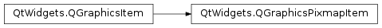

QGraphicsPixmapItem¶
Synopsis¶
Functions¶
- def
offset() - def
pixmap() - def
setOffset(offset) - def
setOffset(x, y) - def
setPixmap(pixmap) - def
setShapeMode(mode) - def
setTransformationMode(mode) - def
shapeMode() - def
transformationMode()
Detailed Description¶
The
PySide2.QtWidgets.QGraphicsPixmapItemclass provides a pixmap item that you can add to aPySide2.QtWidgets.QGraphicsScene.To set the item’s pixmap, pass a
PySide2.QtGui.QPixmaptoPySide2.QtWidgets.QGraphicsPixmapItem‘s constructor, or call thePySide2.QtWidgets.QGraphicsPixmapItem.setPixmap()function. ThePySide2.QtWidgets.QGraphicsPixmapItem.pixmap()function returns the current pixmap.
PySide2.QtWidgets.QGraphicsPixmapItemuses pixmap’s optional alpha mask to provide a reasonable implementation ofPySide2.QtWidgets.QGraphicsPixmapItem.boundingRect(),PySide2.QtWidgets.QGraphicsPixmapItem.shape(), andPySide2.QtWidgets.QGraphicsPixmapItem.contains().
The pixmap is drawn at the item’s (0, 0) coordinate, as returned by
PySide2.QtWidgets.QGraphicsPixmapItem.offset(). You can change the drawing offset by callingPySide2.QtWidgets.QGraphicsPixmapItem.setOffset().You can set the pixmap’s transformation mode by calling
PySide2.QtWidgets.QGraphicsPixmapItem.setTransformationMode(). By default,Qt.FastTransformationis used, which provides fast, non-smooth scaling.Qt.SmoothTransformationenablesQPainter.SmoothPixmapTransformon the painter, and the quality depends on the platform and viewport. The result is usually not as good as calling QPixmap::scale() directly. CallPySide2.QtWidgets.QGraphicsPixmapItem.transformationMode()to get the current transformation mode for the item.
-
class
PySide2.QtWidgets.QGraphicsPixmapItem([parent=nullptr])¶ -
class
PySide2.QtWidgets.QGraphicsPixmapItem(pixmap[, parent=nullptr]) Parameters: - pixmap –
PySide2.QtGui.QPixmap - parent –
PySide2.QtWidgets.QGraphicsItem
Constructs a
PySide2.QtWidgets.QGraphicsPixmapItem.parentis passed toPySide2.QtWidgets.QGraphicsItem‘s constructor.See also
Constructs a
PySide2.QtWidgets.QGraphicsPixmapItem, usingpixmapas the default pixmap.parentis passed toPySide2.QtWidgets.QGraphicsItem‘s constructor.See also
- pixmap –
-
PySide2.QtWidgets.QGraphicsPixmapItem.ShapeMode¶ This enum describes how
PySide2.QtWidgets.QGraphicsPixmapItemcalculates its shape and opaque area.The default value is .
Constant Description QGraphicsPixmapItem.MaskShape The shape is determined by calling QPixmap.mask(). This shape includes only the opaque pixels of the pixmap. Because the shape is more complex, however, it can be slower than the other modes, and uses more memory.QGraphicsPixmapItem.BoundingRectShape The shape is determined by tracing the outline of the pixmap. This is the fastest shape mode, but it does not take into account any transparent areas on the pixmap. QGraphicsPixmapItem.HeuristicMaskShape The shape is determine by calling QPixmap.createHeuristicMask(). The performance and memory consumption is similar to .
-
PySide2.QtWidgets.QGraphicsPixmapItem.offset()¶ Return type: PySide2.QtCore.QPointFReturns the pixmap item’s offset , which defines the point of the top-left corner of the pixmap, in local coordinates.
-
PySide2.QtWidgets.QGraphicsPixmapItem.pixmap()¶ Return type: PySide2.QtGui.QPixmapReturns the item’s pixmap, or an invalid
PySide2.QtGui.QPixmapif no pixmap has been set.
-
PySide2.QtWidgets.QGraphicsPixmapItem.setOffset(x, y)¶ Parameters: - x –
PySide2.QtCore.qreal - y –
PySide2.QtCore.qreal
This convenience function is equivalent to calling
PySide2.QtWidgets.QGraphicsPixmapItem.setOffset()(PySide2.QtCore.QPointF(x,y)).- x –
-
PySide2.QtWidgets.QGraphicsPixmapItem.setOffset(offset) Parameters: offset – PySide2.QtCore.QPointFSets the pixmap item’s offset to
offset.PySide2.QtWidgets.QGraphicsPixmapItemwill draw its pixmap usingoffsetfor its top-left corner.
-
PySide2.QtWidgets.QGraphicsPixmapItem.setPixmap(pixmap)¶ Parameters: pixmap – PySide2.QtGui.QPixmapSets the item’s pixmap to
pixmap.
-
PySide2.QtWidgets.QGraphicsPixmapItem.setShapeMode(mode)¶ Parameters: mode – PySide2.QtWidgets.QGraphicsPixmapItem.ShapeModeSets the item’s shape mode to
mode. The shape mode describes howPySide2.QtWidgets.QGraphicsPixmapItemcalculates its shape. The default mode isMaskShape.See also
PySide2.QtWidgets.QGraphicsPixmapItem.shapeMode()QGraphicsPixmapItem.ShapeMode
-
PySide2.QtWidgets.QGraphicsPixmapItem.setTransformationMode(mode)¶ Parameters: mode – PySide2.QtCore.Qt.TransformationModeSets the pixmap item’s transformation mode to
mode, and toggles an update of the item. The default mode isQt.FastTransformation, which provides quick transformation with no smoothing.Qt.SmoothTransformationenablesQPainter.SmoothPixmapTransformon the painter, and the quality depends on the platform and viewport. The result is usually not as good as calling QPixmap::scale() directly.
-
PySide2.QtWidgets.QGraphicsPixmapItem.shapeMode()¶ Return type: PySide2.QtWidgets.QGraphicsPixmapItem.ShapeModeReturns the item’s shape mode. The shape mode describes how
PySide2.QtWidgets.QGraphicsPixmapItemcalculates its shape. The default mode isMaskShape.See also
PySide2.QtWidgets.QGraphicsPixmapItem.setShapeMode()QGraphicsPixmapItem.ShapeMode
-
PySide2.QtWidgets.QGraphicsPixmapItem.transformationMode()¶ Return type: PySide2.QtCore.Qt.TransformationModeReturns the transformation mode of the pixmap. The default mode is
Qt.FastTransformation, which provides quick transformation with no smoothing.
© 2018 The Qt Company Ltd. Documentation contributions included herein are the copyrights of their respective owners. The documentation provided herein is licensed under the terms of the GNU Free Documentation License version 1.3 as published by the Free Software Foundation. Qt and respective logos are trademarks of The Qt Company Ltd. in Finland and/or other countries worldwide. All other trademarks are property of their respective owners.